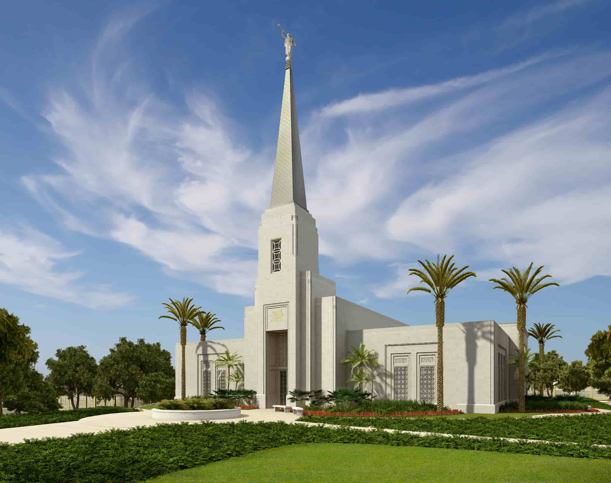

Temples of the church of Jesus Christ Of Latter-day Saint
Abidjan Cote d'lvoire
About The Temple
The Abidjan Côte d'Ivoire Temple is a temple of the Church of Jesus Christ of Latter-day Saints (LDS Church) in
Abidjan, the largest city in Côte d'Ivoire.
The intent to construct the temple was announced by church president Thomas S. Monson on October 3, 2009, during
the church's semi-annual general conference.
The temple was dedicated on June 18, 2015, by Dieter F. Uchtdorf, a member of the church's First Presidency. It
is the first temple built in Côte d'Ivoire and the second in Africa, after the Johannesburg South Africa Temple.
-
Dedicated: June 18, 2015 Dedicatory prayer
Visiting Information
-
Location: lot118 Riviera Attoban Cocody Abidjan, Côte d'Ivoire
-
Hours: Check Ordinace Shedule
-
Phone: +225 25 22 0 18010 3
-
Housing: Available